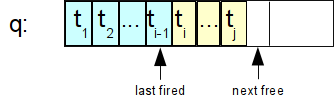

Active rules specify certain actions that have to be executed if an event occurs and a condition is fulfilled at this time. Because active rules consists of an Event, a Condition and an Action, they are abbreviated as ECArule.
Events (ON-part) of ECArules are insertions and deletions of objects (Tell/Untell) and queries (Ask). The events are detected during the processing of the input frames for a Tell or Untell or Ask operation. For example, if you tell 2 frames at a time, and the first frame matches an event for an ECArule, then the ECArule is executed before the second frame is processed. You can also control the sequencing of the firing of ECA rules by the so-called ECAmode and by priority orderings in the set of defined ECArules.
The condition of the ECArule (IF-part) is a logical expression over the database. It will bind free variables occurring in the condition (if any) and these bindings together with the bindings of the event are passed to the action part of the ECArule.
The action (DO-part) of an ECArule is evaluated for each evaluation of the IF-part that has is true in the database. The elements in a DO-part can be Tell, Untell, Retell, Ask and Call actions. Call actions can call any Prolog predicate, for example a Prolog predicate defined as a CBserver plug-in (see appendix F). Retell actions are combining an Untell and a Tell, in particular for assigning a new attribute value, e.g. Retell((e salary newsalary)). Optionally, one can specify an ELSE-part which consists of actions that are executed when the IF-part is not satisfiable for any binding of the free variables. The Ask action is only useful for ECArules that have an ELSE-part. In this case, the Ask will retrieve information from the database that cannot be retrieved within the IF-part. The special action ’reject’ will abort the complete transaction that directly or indirectly triggered the ECArule.
The effect of ECArules is subject to the regular integrity checking of ConceptBase. If an integrity violation is detected, then the whole transaction including all updates by ECArules is rolled back. The integrity test is started after all enabled ECArules have fired.
In ConceptBase, active rules are defined similar to query classes. The user has to create an instance of the builtin class ECArule. The following frame shows the Telos definition of the class ECArule.
Class ECArule with
attribute
ecarule : ECAassertion;
priority_after: ECArule;
priority_before : ECArule;
mode : ECAmode;
active : Boolean;
depth : Integer;
rejectMsg : String
constraint
{ ... }
end
A correct ECArule must specify at least the attribute ecarule,
the other attributes are optional. The language for ECAassertions
is a extension of the assertion language, it is specified as text between
$ signs in the same way as rules and constraints.
An ECAassertion has the following structure (the syntax is described in section A.3).
$ x1,x2/C1 y1/C2 ...
ON [TRANSACTIONAL] event [FOR x]
[IF|IFNEW] condition
DO action1, action2 ...
[ELSE action3]
$
The TRANSACTIONAL modifier cannot be used in combination with the
FOR clause.
The ELSE-part is optional.
The first line contains the declaration of all variables
used in the ECAassertion. The specified classes of the variables
(here: C1 and C2) are only used for compilation
of the rule, during the evaluation of the rule it is not tested
if the variables are instances of the specified classes. If necessary,
include predicates like In(z,Class) in the IF-part of the ECArule.
The variables can occur in the ON-, IF-, DO-, and ELSE-part of the ECArule.
When the IF-part begins with IFNEW, then the whole
condition shall be evaluated against the newest database state. See also
’new’ tag for conditions.
There is also a variant of ECArules without an IF-part. It is equivalent to the longer form on the right side. The shortcut can also be used in combination with the TRANSACTIONAL modifier or the FOR clause.
$ x1,x2/C1 y1/C2 ... $ x1,x2/C1 y1/C2 ...
ON event ON event IF TRUE
DO action1, action2 ... DO action1, action2 ...
$ $
Possible events are the insertion (Tell) or deletion (Untell) of attributes (A),
instantiation links (In), or specialization links (Isa). For example,
if the rule should be executed if an object is inserted as instance
of Class, then the event statement is: Tell In(x,Class).
Furthermore, an event may be a query, e.g. if you specify the event
Ask find_instances[Class/class] the ECA rule is executed
before the evaluation of the query find_instances with the parameter Class.
Potential updates to the database caused by the ECA rules will be persistent, i.e.
in such cases an Ask van well update the database.
It is possible to use variables as a placeholders for parameters in the Ask
event clause.
The event detection algorithm takes only extensional events into account. Events that can be deduced by a rule or a query are not detected. However, the algorithm is aware of the predefined Telos axioms, e.g. if an object is declared as an instance of a class, the object is also an instance of the super classes of this class.
The condition (IF-part) of an ECArule consists of predicates
combined by the logical operators ’and’, ’or’,
and ’not’. Quantified sub-expressions (forall, exists) are not allowed.
You can however use query classes to encode such sub-expressions1.
The arguments of the predicates are either bound by the ON-part
of the ECA rule or they are free variables. When an event occurs that fires an
ECArule, then the condition is evaluated against the database yielding bindings for the
free variables. Each such binding will be passed to the action part of the ECArule.
Note that ECArules without any free variable are also possible.
By default, predicates are evaluated against the old state of the object base
(i.e., before the transaction started).
If a predicate has to be evaluated on the new database state, i.e. the intermediate state
representing the updates processed so far during the transaction, then it has
to be quoted by the backward apostrophe, for example `(x in Class)
instead of (x in Class). The syntax new((x in Class))
is supported as well and equivalent to the use of the backward apostrophe.
Note that only conditions of ECA rules can see intermediate database states.
If the whole condition shall be evaluated against the new database state, the
use the clause IFNEW instead IF.
Actions are specified in a comma-separated list. The syntax is similar to that one of events, except that you can also ask queries (Ask) and call Prolog predicates (Call). The standards actions are as follows:
Instead of the capitalized action names Tell you can also use the small caps variant tell. The same rule is applicable for Untell, Retell, Ask, Raise, and Call. Analogously, the event statements in the ON-part of an ECArule can laso use the small caps variants.
All variables in Tell, Untell and Retell2 actions must be bound. The insertion of an attribute A(x,ml,y) is only done, if there is no attribute of category ml with value y for object x. Then, a new attribute with a system-generated label is created. If an attribute A(x,ml,y) should be deleted, then all attributes of category ml with value y for object x are deleted3. If the argument of Retell is a fact AL(x,ml,n,y), then there will be at most one stored asstribute with category ml and label n that has to be deleted before the new fact is told. It is well possible that an attribute is updated (untell+tell) several times by action parts of ECArules during a single ConceptBase transaction. Only the state of the attribute after all ECArule firings will be visible after a successful commit.
There are a few special procedures, which may be called within the DO- or ELSE-part of an ECArule:
Other predicates to be invoked via Call can be defined in a LPI-file (see Counter example below).
Events and actions may also be specified in a prefix syntax, e.g.
Tell (x in Class) instead of the longer form Tell((x in Class)).
Furthermore, there are two simple builtin actions: noop4
is not doing anything
(except that is succeeds), and reject aborts the current transaction.
If the execution of an ECArule leads to an update to the database, i.e. via Tell or Untell, then the updated database is subject to integrity checking. If a violation is detected, then the whole transaction is rolled back including the updates done by ECArules.
The attributes priority_after and priority_before ensure, that this ECArule is executed after or before some other ECArules, if several rules can be fired at the same time. There can be multiple values for each of these attributes. As you may have noted one of the two attributes is redundant since (r1 priority_after r2) is equivalent to r2 priority_before r1). Still, ConceptBase provides both. Furthermore, ConceptBase does not automatically check the consistency of the priority declarations (if r1 is before r2 then r2 cannot be before r1). ConceptBase also does not provide for the transitivity of the priority. You can however define this yourself via appropriate deductive rules.
The coupling mode of an ECArule determines the point of time when the condition and the action of the ECArule are evaluated and executed. Possible values are:
The answer to the evaluation of the condition of an ECArule is the set of all combinations of variable fillers that make the condition true.
The modes Immediate and ImmediateDeferred differ considerably from
the mode Deferred: the condition of the ECArule is evaluated
while not all frames of the current transaction are told (resp. untold).
So, a quoted predicate like `(x in Class) will be evaluated
against a database state in which only those frames of the current transaction
are visible (resp. invisible) that were told (resp. untold) before
the ECArule was triggered!
The default is Immediate. ConceptBase shall enforce a first-in-first-out sequencing of ECArules with modes ImmediateDeferred and Deferred. This sequence will enforce the complete execution of a triggered ECArule before the next rule triggering is handled. The strict sequencing avoids intertwining of action executions of multiple ECArule threads. So, if the answer to a condition of an ECArule has multiple entries, then the actions belonging to the respective answers are executed in a sequence in which no action of another ECArule is called.
The coupling mode of an ECArule influences its execution semantics. There are three basic steps. First, a Tell/Untell/Ask transaction is translated in a sequence of atomic events. In case of a Tell/Untell, each frame inside the Tell induces a delimiter in the event list that is used later for the event processing. A typical event list might look like
| e1 | e2 | e3 | ⋄ | e4 | e5 | ⋄ | … |
Here, the events e1 … e3 were generated for the first frame of a Tell/Untell, the events e4, e5 were generated for the second frame. The diamond separates the events generated for subsequent frames of the same Tell/Untell operation. The event list is right-open since the execution of actions from ECArules can lead to further events. Each event has one of the forms Tell(lit), Untell(lit), or Ask(q), where lit is an attribution, instantiation, or specialization predicate, and q is a query call.
ConceptBase will scan the event list and process events as soon as it detects a delimiter (denoted by the diamond above). For example, when ConceptBase "sees" the delimiter between e3 and e4, it will start to process e1 to e3, one after the other. Processed events are removed from the event list. The first step is to determine the matching ECArules for a given event ei. This yields a working set of rules for each processed event ei:
ws(ei) = Set of all ECArules whose ON part matches ei
The matching of the ON part of the ECArule and the event typically leads to a binding of variables in the rule’s IF and DO parts. This binding is stored in the rule’s representation within the work set. The rules in the working set are sorted to reflect the priority settings of ECArules. If two rules have no priority defined between them, then the definition order is used to sort them (older rules before newer rules). Each rule r in the working set will then be processed as follows, one after the other.
The rule processing depends on the coupling mode of the ECArule in the working set. If the mode is Immediate, then the IF part is evaluated (yielding all possible combinations of variables that make the IF part true). If the answer set is empty, then ConceptBase will call the ELSE actions of the ECArule. Otherwise, ConceptBase will call the DO part for each variable combination determined in the previous step.
If the mode is ImmediateDeferred, then ConceptBase will evaluate the IF part of the current rule like before. Instead of calling the DO (or ELSE part), it will however put a trigger do(r,actions) on a trigger queue q. The parameter r identifies the rule. The parameter actions contains all instantiations of the DO-part of r by the variable substitutions computed by the evaluation of the IF part of r. If there are no such substitutions, then actions is set to the ELSE part of r (if existent). Otherwise, no actions would be appended to the wating queue.
If the mode is Deferred, then ConceptBase will not immediately evaluate the IF part but will just append a trigger def(ei,r) to the trigger queue q.
When all events in the event list are converted to triggers, i.e. when all frames in a Tell/Untell transactions are transformed and stored, or when the Ask call has been processed, then ConceptBase will start to process the trigger queue q. It is processed in a first-in-first-out (FIFO) manner. Each do and def trigger is processed according to its type. If the entry has the form do(r,actions), then ConceptBase will execute the actions in the second parameter, possibly leading to new events and triggers.

Figure 4.1: State of the trigger queue
Figure 4.1 shows a snapshot of a trigger queue. The triggers tk have the form do(r,actions) or def(ei,r). There are two pointers "last fired" (initially 0) and "next free" (initially 1) to manage the queue. New triggers are added at the right end (incrementing the next free pointer). The processing of the queue starts from left to right. The last processed item is pointed to by the "last fired" pointer. The queue is empty (resp. completely processed) iff "last fired" plus 1 equals to "next free".
If the entry has the form def(e,r), then ConceptBase will first determine all combinations of variables in the IF part of r. Then it will call the actions of the DO (or ELSE part) for the computed answers. Note that the event e typically binds some variables in the rule r.
Actions of an ECArule can update the database. They will then lead to new entries in the event list that are processed just like described above. The events are generated per action (Tell/Untell/Retell) and then followed by a delimiter, i.e. ConceptBase will start processing the events after each Tell/Untell/Retell action.
You can control the execution order of ECA triggers via coupling modes, precedence (priority), and via a feature called queue switch. The queue switch utilizes seperate trigger queues for ECA triggers:
There are two ways to specify a queue switch. The first is by including the keyword TRANSACTIONAL in the ON-part of an ECArule, e.g.
ON TRANSACTIONAL Tell (x in A)
As soon as an event e is matched against the event clause of a "transactional" ECArule, the trigger queue is switched to q1. Subsequent triggers will then be put on q1 instead of q0. Note that several ECArules can match a given event. The switch occurs when the first transactional rule is encountered.
The second method creates user-defined trigger queues via the FOR-clause:
ON Tell (x in A) FOR x
In the above example, each event that matches the event clause will also fill the variable x in the FOR-clause. This will instruct ConceptBase to switch to the (new) trigger queue labelled x. If you use "FOR q1", then the method yields the same effect as with the TRANSACTIONAL clause. As soon the the trigger queue labelled x is empty, ConceptBase will switch back to the newest non-empty trigger queue, or back to q0.
The events on q1 are processed before the remaining events of q0. The queue switch leads essentially to a prioritizition of events on q1 over q0.
Examples highlighting the differences between the execution modes and the transaction model are presented in the CB-Forum at link. You can use the tracemode high (see chapter 6) to debug ECArules. The ConceptBase server will then write trace messages about the execution of ECArules on the console terminal.
The attribute active allows the user to deactivate the rule without untelling it. Possible values are TRUE and FALSE. The default value is TRUE, i.e. by default are ECArules active.
The attribute depth specifies the maximum nesting depth of ECArules. ECArules may be fired by events which are produced by actions of the same or other ECArules. Because this often results in an endless loop, the execution of the ECArule is aborted if the current nesting depth is higher than the specified value. The default of this attribute is 0 (= no limitation).
If the ECArule rejects the transaction in some cases, it is useful to specify an error message. The value of the attribute rejectMsg is returned to the user.
The constraints of the class ECArule ensure, that the attributes mode, active and depth have only single values and that the attribute ecarule has exactly one value.
The Telos source files of the following examples can also be found in
your ConceptBase installation directory at
$CB_HOME/examples/ECArules.
Further examples are in the CB-Forum at
link.
Materialization of views means that deduced information is stored in the object base. We provide here an example, how to materialize and maintain simple views.
Class Employee with
attribute
salary : Integer
end
View EmployeeWithHighSalary isA Employee with
constraint
c : $ exists i/Integer (this salary i) and (i > 100000) $
end
Class EmployeeWithHighSalary_Materialized end
The view EmployeeWithHighSalary
contains all employees who earn more than 100.000.
The class EmployeeWithHighSalary_Materialized will
contain the same employees. This implemented by the following
ECArules:
ECArule EmployeeWithHighSalary_Materialized_Ins with
ecarule
er : $ x/Employee
ON Tell (x in Employee)
IF `(x in EmployeeWithHighSalary)
DO Tell (x in EmployeeWithHighSalary_Materialized) $
end
ECArule EmployeeWithHighSalary_Materialized_Del with
ecarule
er : $ x/Employee
ON Untell (x in Employee)
IF (x in EmployeeWithHighSalary)
DO Untell (x in EmployeeWithHighSalary_Materialized) $
end
ECArule EmployeeWithHighSalary_Materialized_Ins_salary with
ecarule
er : $ x/Employee y/Integer
ON Tell (x salary y)
IF `(x in EmployeeWithHighSalary)
DO Tell (x in EmployeeWithHighSalary_Materialized) $
end
ECArule EmployeeWithHighSalary_Materialized_Del_salary with
ecarule
er : $ x/Employee y/Integer
ON Untell (x salary y)
IF (x in EmployeeWithHighSalary)
DO Untell (x in EmployeeWithHighSalary_Materialized) $
end
The first rule checks, if the employee belongs to the view, when the employee was inserted. Note, that we don’t use the constraint of the view in the ECArules, we just reuse the view definition here. The second rule does the same for deletion of employees. The first rule checks the IF-part on the new database state since the employee’s salary is usually told together with the employee. In contrast, the IF-part of the second rule is checked against the old database state, i.e. where the employee was still defined.
The third rule checks, if the employee is an instance of the view class, when the attribute salary was inserted. Again, the fourth rule does the same for deletion of the attribute.
If the number of employees is large it is more efficient to ask for the instances of materialized than to evaluate the view. However, if updates occur quite often, materialization is not good, because materialized view must be maintained for every update transaction.
This example shows how to call prolog predicates with an ECArule. It implements a counter for a class Employee. The counter is stored as an instance of the object EmployeeCounter. Whenever an employee is inserted or deleted from the object base, the counter is incremented or decremented.
Class Employee end
EmployeeCounter end
ECArule EmployeeCounterRule with
ecarule
er : $ x/Employee i,i1/Integer
ON Tell(In(x,Employee))
IF (i in EmployeeCounter)
DO Untell(In(i,EmployeeCounter)),
Call(increment(i,i1)),
Tell(In(i1,EmployeeCounter))
ELSE Tell(In(1,EmployeeCounter))
$
end
ECArule EmployeeCounterRule_del with
ecarule
er : $ x/Employee i,i1/Integer
ON Untell(In(x,Employee))
IF (i in EmployeeCounter)
DO Untell(In(i,EmployeeCounter)),
Call(decrement(i,i1)),
Tell(In(i1,EmployeeCounter))
$
end
The files $CB_HOME/examples/ECArules/counter.*.lpi5
contain the code for the Prolog predicates increment and decrement.
You must copy LPI files to the database directory before you start
the ConceptBase server (see also appendix F). Note, that all free variables
of the PROLOG predicate must be bound in its call. Furthermore,
the variables must be bound to object dentifiers, if you
want to use them in a Tell,Untell or Ask action.
The effect of the increment and decrement procedures can also be achieved using the arithmetic expressions like i+1. The simple solution with arithmetic expressions is available from link. The purpose of the example above is only to show that user-defined PROLOG predicates can be called in the DO-part of an ECArule. You can define more interesting PROLOG predicates like sending an email to a user with content derived from the object base. This requires however some knowledge of PROLOG and of the internal features of the ConceptBase server.
You should also note that the count of a class c can always (and more correctly) be computed by the function COUNT(c). That does even count inherited and deduced instances.
An often asked requirement in metamodeling applications is the recording of creation and modification dates. ConceptBase stores the creation time of an object in its object base, primary for the use of Rollback queries. With the predicate Known(x,t) the time of the creation of x can be made visible in rules or queries. The following frames shows how to use it:
Class Employee with
attribute
salary : Integer;
createdOn : TransactionTime;
lastModified : String
rule
createdOnRule : $ forall t/TransactionTime
Known(this,t) ==> (this createdOn t) $
end
EmpWithoutLastModified in QueryClass isA Employee with
constraint
noLM: $ not exists t/String (this lastModified t) $
end
The limitation of this approach is, that it just records the creation date of an object and not the time when it was modified. i.e. the value of an attribute was changed.
To overcome this restriction, one can use ECArules to update the attribute lastModified of the above example, whenever an attribute of the category salary is inserted.
ECArule LastModified_init with
mode m: ImmediateDeferred
ecarule
er : $ t/TransactionTime y/Employee
es/Employee!salary
ON Tell (es in Employee!salary)
IFNEW
From(es,y) and (y in EmpWithoutLastModified) and Known(es,t)
DO Tell (y lastModified t)
$
end
ECArule LastModified_change with
mode m: ImmediateDeferred
ecarule
er : $ t1,t2/TransactionTime y/Employee i/Integer
es/Employee!salary lab/Label
ON Tell (es in Employee!salary)
IFNEW
From(es,y) and (y lastModified t1) and Known(es,t2)
DO Untell (y lastModified t1),
Tell (y lastModified t2)
$
end
Both ECArules are evaluated against the new database state.
The first ECArule is for the case where the object y has not
yet a lastModified attribute. Then, it has to be initialized.
The second rule takes care for the updating case.
Note that
the transaction time is represented as string of the
form "tt(year,month,day,hour,minute,sec,millisec)".
A deprecated solution is available from link. It uses the Ask action in the ’DO’ and ’ELSE’ parts to query perform different actions depending on whether an object already has a filler for the attribute lastModified.
ECArules are a powerful tool to express semantics of concepts that are not expressible by deductive rules. For example, the semantics of petri nets, in particular the firing of an enabled transition, can be expressed by a single ECArule.
ECArule UpdateConnectedPlaces with
mode m: Deferred
rejectMsg rm: "The last firing of a transition failed.
Check whether the transition was enabled!"
ecarule
er : $ fire/FireTransition t/Transition p/Place m/Integer
ON Tell (fire transition t)
IF (t in Enabled) and
(p in ConnectedPlace[t]) and
(m = M(p)+IM(p,t))
DO Retell (p marks m)
ELSE reject $
end
The example shows that the condition can also be a complex logical expression. Note that the event (ON-part) binds the two variables fire and t. The condition (IF-part) additionally binds the free variables p and m. Each binding of the free variables is passed to the DO-part leading to some update of the tokenFill attribute. In case that the IF-part cannot be evaluated to true, the ELSE-part is executed. That will lead to an abortion of the current transaction rolling back all updates and issuing the error message listed under rejectMsg. A complete specification of modeling petri nets is in the CB-Forum (link). Further examples of ECA rules can be found at link.
It should be noted that one can also ask queries in the DO-part (and ELSE-part) of an ECArule. Other than for the IF-part, such queries are only evaluated once.
ECArules can be configured to follows various execution semantics. A particular issue is the evaluation of the ECA condition (IF-part). Originally, the predicates in the IF-part were not re-ordered by ConceptBase to gain a better performance. Instead, they were executed exactly in the sequence in which they were defined. This is still the case when the CBserver parameter -eo is set to off.
Consider the following example as a variant of UpdateConnectedPlaces discussed in the previous subsection:
ECArule UpdateConnectedPlacesV1 with
mode m: Deferred
ecarule
er : $ fire/FireTransition t/Transition p/Place m/Integer
ON Tell (fire transition t)
IF (p in Place) and
(m = M(p)+IM(p,t)) and
(t in Enabled) and
(p in ConnectedPlace[t])
DO Retell (p marks m) $
end
UpdateConnectedPlacesV1 is equivalent to UpdateConnectedPlaces but it results in significantly longer execution times. The reason is that the condition of UpdateConnectedPlacesV1 starts with a predicate with an unbound variable p. In contrast, the condition of UpdateConnectedPlaces starts with a predicate whose variable t is bound by the ON-part of the ECArule.
In cases where the IF-part does not contain a mixture of quoted (new database state) and unquoted (old database state), one can outsource the condition to a query class. The advantage is that the constraint of the query class is automatically optimized by ConceptBase.
The extended example is in the CB-Forum at link.
When the CBserver parameter -eo is set to on (=default), then ConceptBase will apply various heuristics to re-order the predicates in the condition. This can result in several orders of magnitude better performance. Currently, the optimization only applies to conditions that are conjunctions of predicates and whose predicates are all referring to the same database state.
The current implementation of active rules in ConceptBase has several limitations.
The expressive power of ECArules exceed the one of deductive rules, which are limited to Datalog. So, one could be tempted to prefer ECArules over deductive rules. The contrary should however be your choice:
There are some scenarios, where you do need the power of ECArules. For example, you may want to trigger the call of an external program, when a certain condition becomes true in the database. Or you need to change the database state of certain objects when a certain update occurs. For example, triggering a transition in a petri net shall change the state of the ’places’ connected to the triggered transition. Such semantics is beyond Datalog and requires more expressive power, such as provided by ECArules.